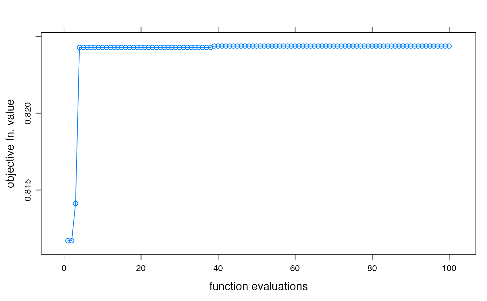

Fit a hydromad model by sampling the parameter space. Returns best result from sampling in parameter ranges using random, latin hypercube sampling, or a uniform grid (all combinations). The function also retains the parameter sets and objective function values, which can be used to define a feasible parameter set
fitBySampling( MODEL, objective = hydromad.getOption("objective"), samples = hydromad.getOption("fit.samples"), sampletype = c("latin.hypercube", "random", "all.combinations") )
| MODEL | a model specification created by |
|---|---|
| objective | objective function to maximise, given as a
|
| samples | number of parameter sets to test. |
| sampletype | sampling scheme -- see |
the best model from those sampled, according to the given
objective function.
See parameterSets.
Felix Andrews felix@nfrac.org
data(Cotter) x <- Cotter[1:1000] ## IHACRES CWI model with armax unit hydrograph fitted by least squares modx <- hydromad(x, sma = "cwi", routing = "armax", rfit = "ls") modx#> #> Hydromad model with "cwi" SMA and "armax" routing: #> Start = 1966-05-01, End = 1969-01-24 #> #> SMA Parameters: #> lower upper #> tw 0 100 #> f 0 8 #> scale NA NA #> l 0 0 (==) #> p 1 1 (==) #> t_ref 20 20 (==) #> Routing Parameters: #> NULL #> Routing fit spec.: "ls"#> #> Call: #> hydromad(DATA = x, sma = "cwi", routing = "armax", rfit = "ls", #> tw = 95.9596, f = 3.87879, l = 0, p = 1, t_ref = 20, scale = 0.00134404) #> #> Time steps: 900 (0 missing). #> Runoff ratio (Q/P): (0.7028 / 2.285) = 0.3075 #> rel bias: 0.06098 #> r squared: 0.7004 #> r sq sqrt: 0.8015 #> r sq log: 0.814 #> #> For definitions see ?hydromad.stats #>## plot objective function value improvement over time xyplot(optimtrace(foo), type = "b", xlab = "function evaluations", ylab = "objective fn. value" )